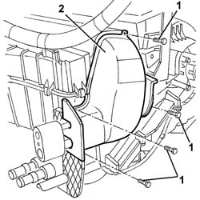
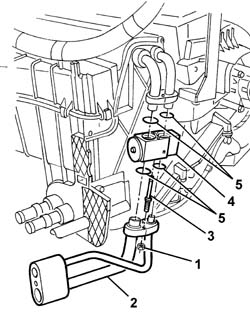
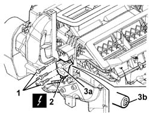
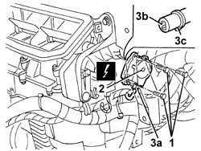
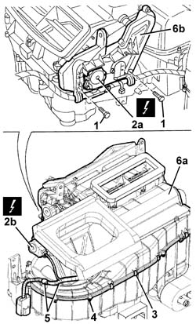
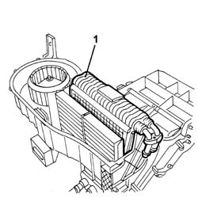

5040C66 air conditioner evaporator - r+r with air conditioner box removed
- Path
- Procedures > 50 AUXILIARY UNITS > 5040 AIR CONDITIONING CASING AND COMPONENTS > 5040C air conditioner box and components > 5040C66 air conditioner evaporator - r+r with air conditioner box removed
- Kind
- repair procedure (removal / refitting; the operation number is the code)
- Applies to
- all engines; all production periods
- Interactive page
- https://sloeber94.github.io/elrnDB-a156/en/#/3238339
Applies to: all engines; production: da 03/02 a 09/03, da 10/03; only with equipment: Air Conditioner
 Removing
Removing
 Refitting
Refitting1. Undo the bolts fixing the shield for the expansion valve.
2. Remove the shield.

Applies to: all engines; production: da 03/02 a 09/03, da 10/03; only with equipment: Air Conditioner
1. Unscrew the nuts.
2. Remove the pipe connector.
3. Unscrew the bolts
4. Remove the expansion valve.
5. Recover the gaskets (do not reuse the gaskets when refitting).

Applies to: all engines; production: da 03/02 a 09/03, da 10/03; only with equipment: Air Conditioner
1. Undo the bolts fixing the left air mixture flap control motor.
2. Disconnect the motor electrical connection.
 | Name | Connector |
|---|---|---|
2 | Left air mixture flap actuator |
3. Remove the motor (3a) releasing its intake (3b).

Applies to: all engines; production: da 03/02 a 09/03, da 10/03; only with equipment: Air Conditioner
1. Undo the bolts fixing the right air mixture flap control motor.
2. Disconnect the motor electrical connection.
| Name | Connector |
|---|---|---|
2 | Right air mixture flap actuator |
3. Remove the motor (3a) releasing the intake (3b) and the cam (3c).

Applies to: all engines; production: da 03/02 a 09/03, da 10/03; only with equipment: Air Conditioner
1. Undo the lower bolts fixing the protection for the cam and levers.
2. Disconnect the electrical connections for the motors (2a, 2b).
| Name | Connector |
|---|---|---|
2a | Air distribution actuator |
| Name | Connector |
|---|---|---|
2b | Air intake actuator |
3. Release the upper cover retaining springs.
4. Undo the bolts fixing the upper cover.
5. Disconnect the wiring from the upper cover.
6. Remove the upper cover (6a) releasing the protection (6b) from the cam underneath.

Applies to: all engines; production: da 03/02 a 09/03, da 10/03; only with equipment: Air Conditioner
1. Remove the evaporator.

Applies to: all engines; production: da 03/02 a 09/03, da 10/03; only with equipment: Air Conditioner
Refitting
RemovingCheck that the evaporator is intact, that there are no leaks and that there is no damage or deposits of dirt on the finned surface.
Fit the evaporator in position.
Place the upper cover in position and secure it using the bolts and the retaining springs.
Connect the wiring to the upper cover.
Connect the electrical connections for the motors.
Tighten the lower bolts fixing the protection for the cam and lever.
Position the right air mixture motor engaging the intake and the cam.
Tighten the bolts fixing the motor.
Connect the motor electrical connections.
Position the left air mixture motor engaging the intake.
Tighten the bolts fixing the motor.
Connect the motor electrical connections.
Position the new gaskets on the expansion valve, then secure it using the bolts.
Position the pipe connector and secure it using the nuts.
Position the shield and fix it using the bolts